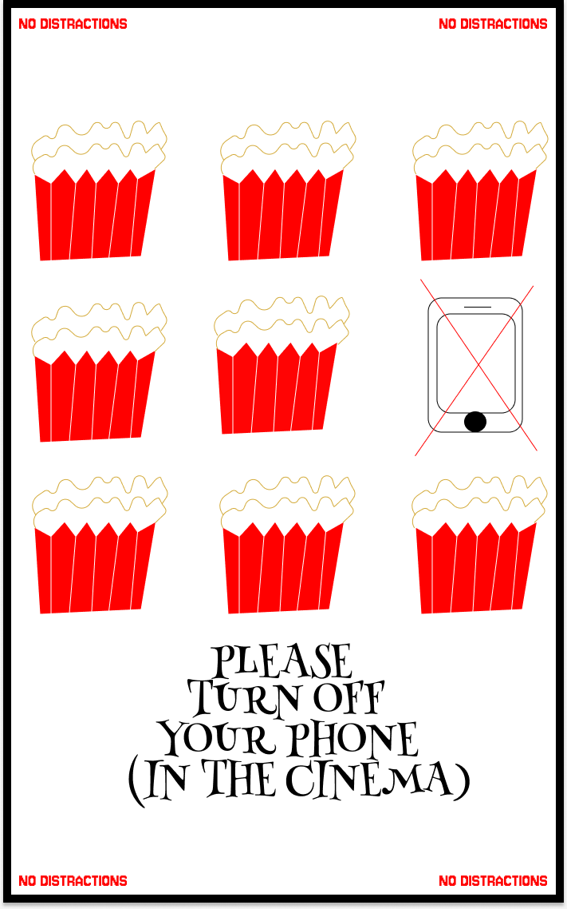
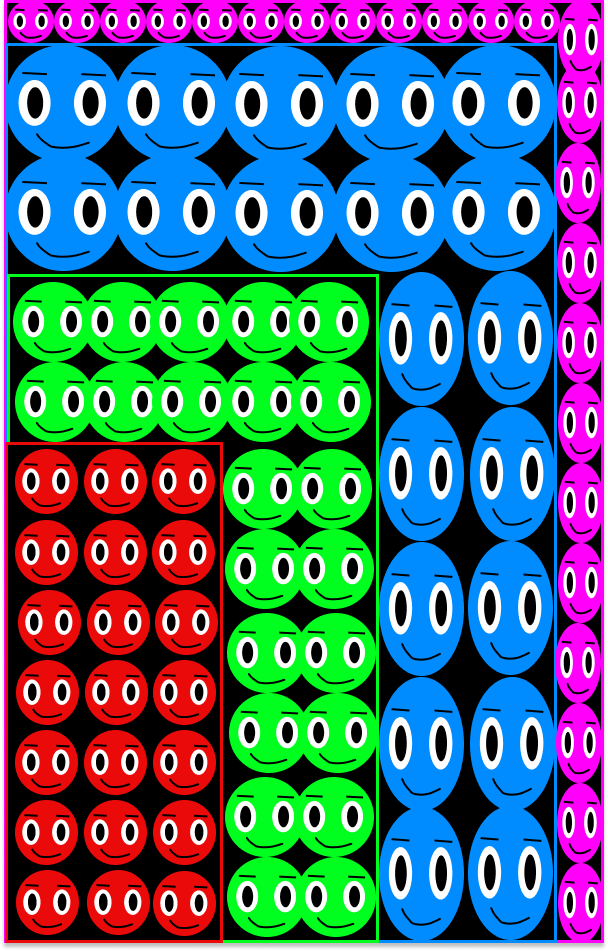

Hello, im Santino Pinto
About Me
Hi, im Santino Pinto, I am currently a student at uwe studying digital media. My hobbies are gaming, basketball and video editing. I love the post-production side of content creating hence why i picked digital media to continue to get better in post-production while also learning new skills to support my current skills!
3 Graphic Compositions

Repitition
How doth the little crocodile Improve his shining tail, And pour the waters of the Nile On every golden scale! How cheerfully he seems to grin, How neatly spreads his claws, And welcomes little fishes in, With gently smiling jaws!
Emphasis-Color
"You are old, Father William," the young man said, "And your hair has become very white; And yet you incessantly stand on your head — Do you think, at your age, it is right?" "In my youth," Father William replied to his son, "I feared it might injure the brain; But now that I'm perfectly sure I have none, Why, I do it again and again."

Rhythm-Size
The time has come,' the Walrus said, To talk of many things: Of shoes — and ships — and sealing-wax — Of cabbages — and kings — And why the sea is boiling hot — And whether pigs have wings.' But wait a bit,' the Oysters cried, Before we have our chat; For some of us are out of breath, And all of us are fat!' No hurry!' said the Carpenter. They thanked him much for that.